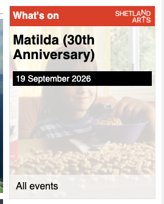
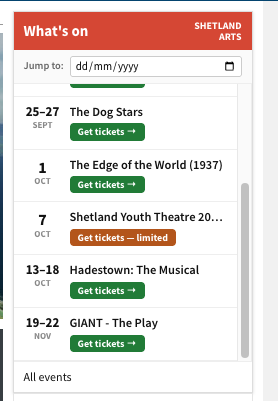

Mareel — What's On widget
The widget people actually see
Every day, Shetland News embeds Mareel's listings in three places on its homepage — mobile, and both sidebars. It's the single biggest passive audience Mareel's programme gets. Here's exactly what they see.

One event. One date. No way to look further ahead. The widget shows whatever is next, full stop — if you want to know what's on next week, or over Christmas, this doesn't tell you.
It's also a plain, non-interactive <iframe>: no filtering, no ticket status, nothing clickable beyond a link through to the full listings.
The proposal
Same footprint, a real list
Same slot in the sidebar. Instead of one static card, a scrollable list of what's actually coming up — with a date-jump control and live ticket status pulled straight from Shetland Arts' own box office.

The next few weeks at a glance, not just the next one event. Multi-day runs show their full range (13–18 Oct), and every entry carries its real ticket status.
The Jump to field scrolls straight to any date — useful the moment there's more on than fits one screen, like over Christmas.
Ticket status is the call to action. "Limited tickets" is the one thing on the widget that gives a reader a reason to book today rather than later — a scarcity signal sitting right next to the booking link, on the events where it's genuinely true.
And "Sold out" earns its place too. A sold-out night isn't a dead end on the page — it's evidence the programme fills, and the quiet nudge to book earlier next time. A widget that only ever shows what's still available tells a reader nothing about how well Mareel sells.
Feasibility
Every field above is real
Shetland Arts' box office (Monad) already returns full availability per event, and per individual performance time — sold out, limited, or open — with no login and no token. We pulled this directly, today:
POST tickets.shetlandarts.org/sales/Ajax/Ajax.svc/FolderShowSearch
{
"FolderName": "Shetland Youth Theatre 2026/27",
"IsSoldOut": false,
"IsLimited": true,
"FolderCallToAction": "Buy Tickets",
"FolderStatus": " (Limited Availability)"
}Confirmed at both the show level and every individual performance time (e.g. "7:30PM Friday, 18 September 2026").